Fall 26
So far we found areas for the standard normal curve, with \mu = 0 and \sigma = 1.
Now we find areas for a normal curve with any mean \mu and any standard deviation \sigma.
We change the x-area into the same size area on the standard normal curve:
Given \mu and \sigma, find the left tail area for an x-value.
Change x to z, then look up the left tail area for z in the table.
A normal distribution has \mu = 3.3 and \sigma = 2.4. Find the left tail area for x = 1.23.
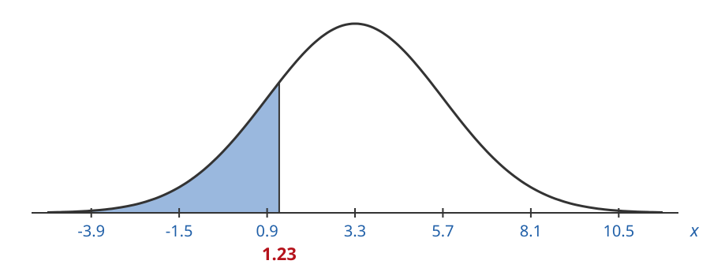
Find the z-value for x = 1.23:
z = \frac{x - \mu}{\sigma} = \frac{1.23 - 3.3}{2.4} = \frac{-2.07}{2.4} = -0.86
The left tail area for z = -0.86 is the same size as our original area:
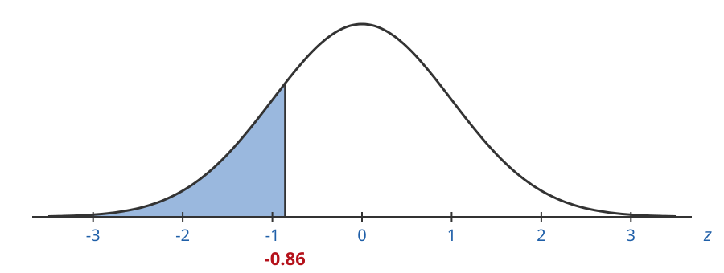
Go to the row -0.8 and the column .06:
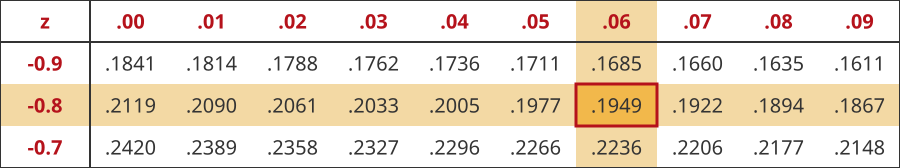
\text{left tail area} = 0.1949
\text{left tail area} = 0.1949 \approx 19\%
A normal distribution has \mu = 1.2 and \sigma = 0.5. Find the left tail area for x = 1.72.
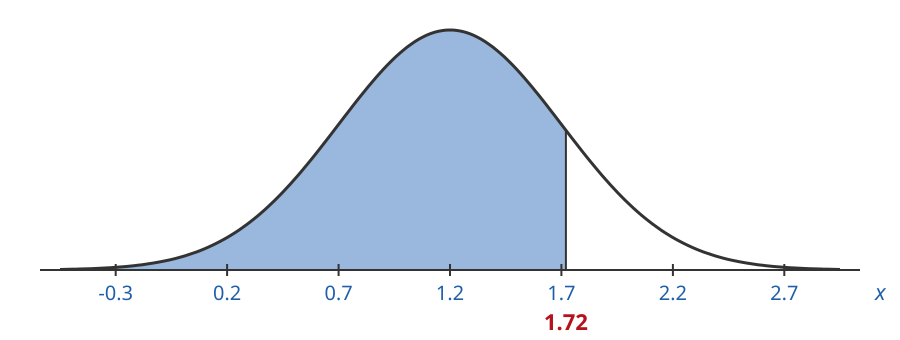
Find the z-value for x = 1.72:
z = \frac{x - \mu}{\sigma} = \frac{1.72 - 1.2}{0.5} = \frac{0.52}{0.5} = 1.04
The left tail area for z = 1.04 is the same size as our original area:
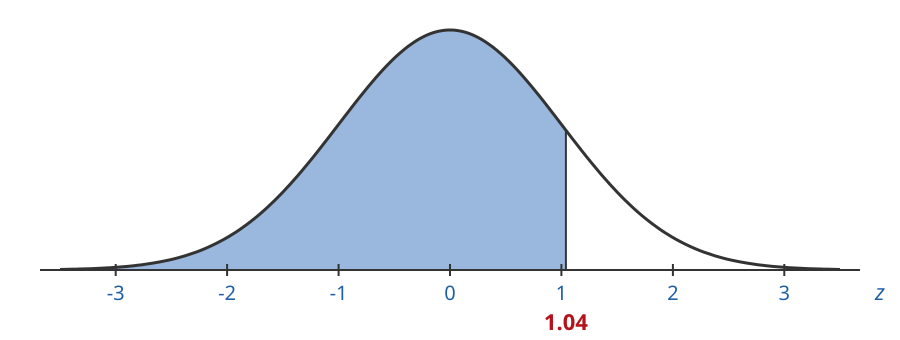
Go to the row 1.0 and the column .04:
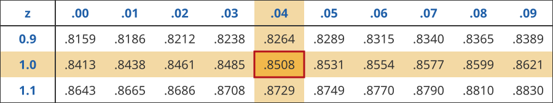
\text{left tail area} = 0.8508
\text{left tail area} = 0.8508 \approx 85\%
We use the same trick as for the standard normal curve.
Find the left tail area for z, then subtract it from 1.0:
\text{right tail area} = 1.0 - \text{left tail area}
A normal distribution has \mu = 42 and \sigma = 12. Find the right tail area for x = 53.
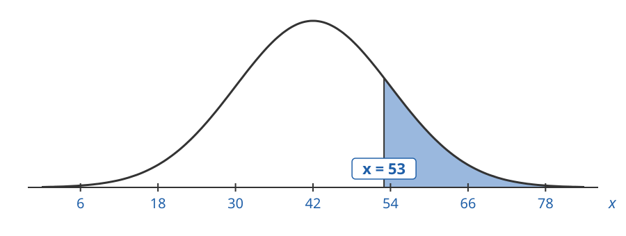
Find the z-value for x = 53:
z = \frac{x - \mu}{\sigma} = \frac{53 - 42}{12} = \frac{11}{12} = 0.92
The right tail area for z = 0.92 is the same size as our original area:
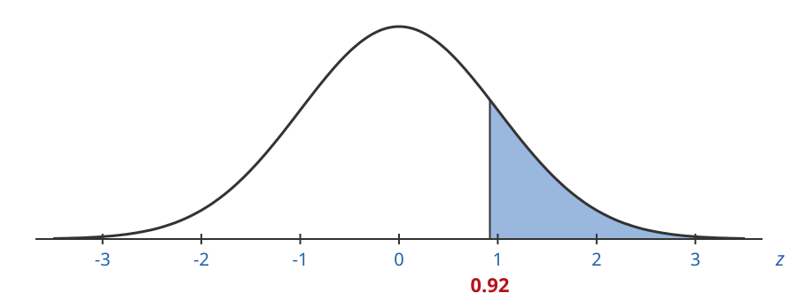
Find the left tail area first. Go to the row 0.9 and the column .02:
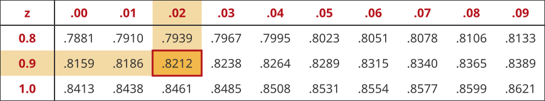
\text{left tail area} = 0.8212
\text{right tail area} = 1.0 - 0.8212 = 0.1788 \approx 18\%
A normal distribution has \mu = 2.8 and \sigma = 1.5. Find the right tail area for x = 2.3.
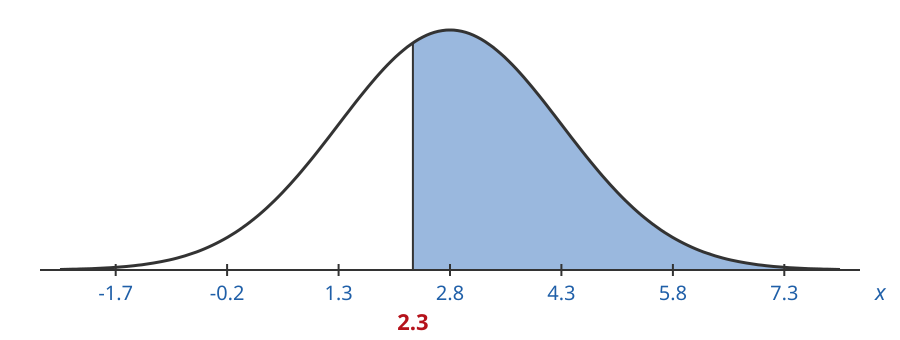
Find the z-value for x = 2.3:
z = \frac{x - \mu}{\sigma} = \frac{2.3 - 2.8}{1.5} = \frac{-0.5}{1.5} = -0.33
The right tail area for z = -0.33 is the same size as our original area:
Find the left tail area first. Go to the row -0.3 and the column .03:
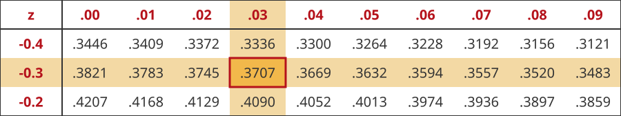
\text{left tail area} = 0.3707
\text{right tail area} = 1.0 - 0.3707 = 0.6293 \approx 63\%
Find the left tail area up to each x-value.
Subtract the smaller left tail area from the larger one:
\text{area between} = \text{left tail area for } z_2 - \text{left tail area for } z_1
A normal distribution has \mu = 23 and \sigma = 8. Find the area between x_1 = 10 and x_2 = 27.
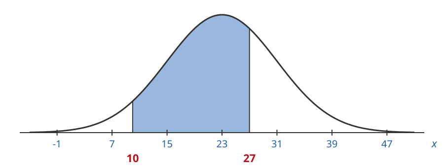
Find the z-value for each x-value:
z_2 = \frac{27 - 23}{8} = \frac{4}{8} = 0.5
z_1 = \frac{10 - 23}{8} = \frac{-13}{8} = -1.63
The area between z_1 = -1.63 and z_2 = 0.5 is the same size as our original area:
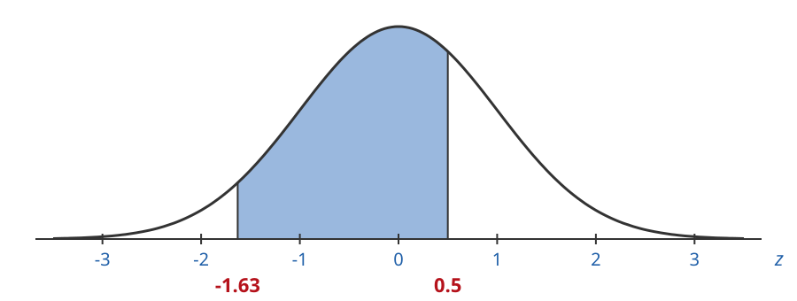
Left tail area for z_2 = 0.5: row 0.5, column .00
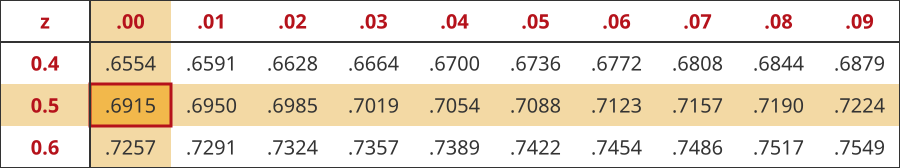
\text{left tail area for } z_2 = 0.6915
Left tail area for z_1 = -1.63: row -1.6, column .03
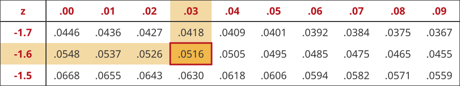
\text{left tail area for } z_1 = 0.0516
\text{area between} = 0.6915 - 0.0516 = 0.6399 \approx 64\%
A normal distribution has \mu = 1.3 and \sigma = 0.8. Find the area between x_1 = 1.6 and x_2 = 2.8.
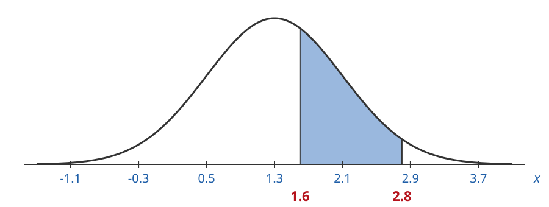
Find the z-value for each x-value:
z_2 = \frac{2.8 - 1.3}{0.8} = \frac{1.5}{0.8} = 1.88
z_1 = \frac{1.6 - 1.3}{0.8} = \frac{0.3}{0.8} = 0.38
The area between z_1 = 0.38 and z_2 = 1.88 is the same size as our original area:
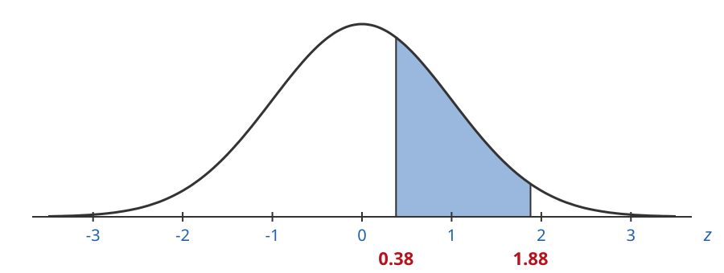
Left tail area for z_2 = 1.88: row 1.8, column .08
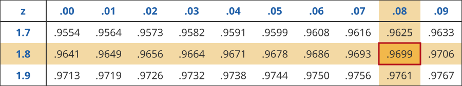
\text{left tail area for } z_2 = 0.9699
Left tail area for z_1 = 0.38: row 0.3, column .08
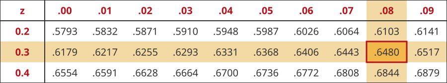
\text{left tail area for } z_1 = 0.6480
\text{area between} = 0.9699 - 0.6480 = 0.3219 \approx 32\%
Areas under a normal curve are chances.
The area for a range of x-values is the chance a data value lands in that range.
Monthly demand for a retail product is normal with mean 48 units and standard deviation 10 units.
Find the chance that demand in a given month is 30 or fewer units.
\mu = 48, \sigma = 10. We want the left tail area for x = 30:
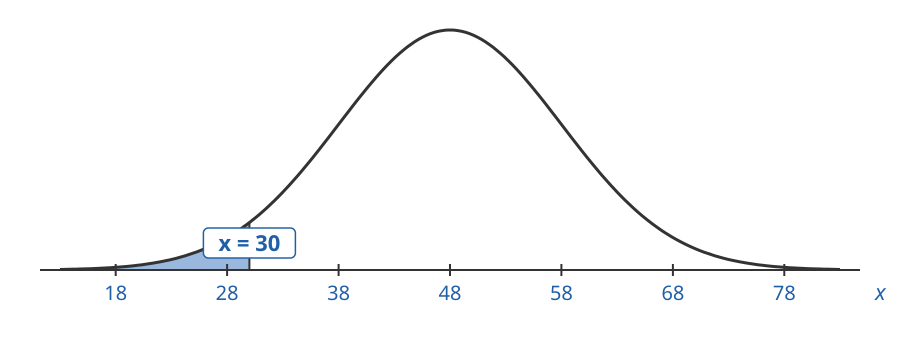
Find the z-value for x = 30:
z = \frac{x - \mu}{\sigma} = \frac{30 - 48}{10} = \frac{-18}{10} = -1.8
The left tail area for z = -1.8 is the same size as our original area:
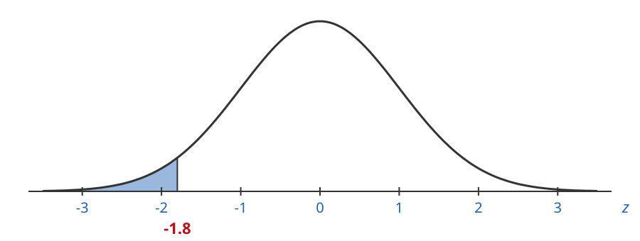
Go to the row -1.8 and the column .00:
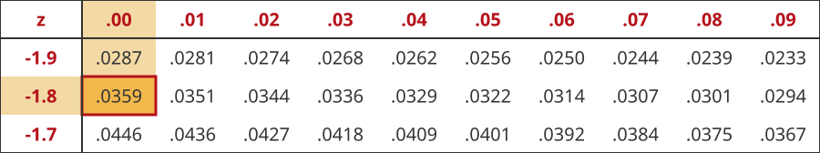
\text{left tail area} = 0.0359
\text{left tail area} = 0.0359 \approx 4\%
There is about a 4\% chance demand will be 30 units or fewer.
Weekly demand for a product is normal with mean 230 and standard deviation 25.
You have 265 units to sell this week. Lost sales happen when demand is more than your inventory.
What is the chance of lost sales this week?
\mu = 230, \sigma = 25. We want the right tail area for x = 265:
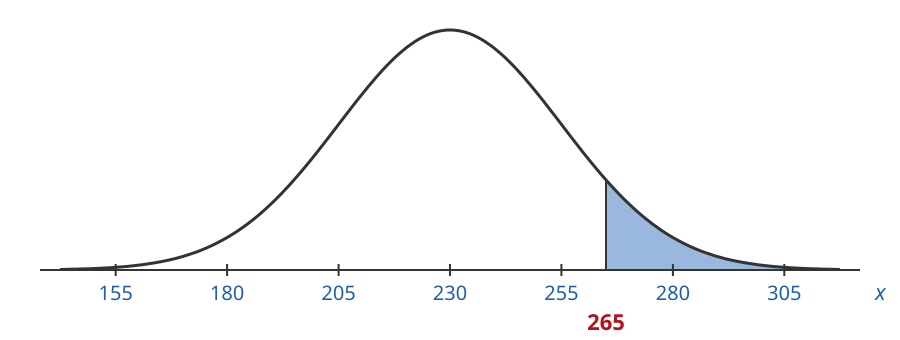
Find the z-value for x = 265:
z = \frac{x - \mu}{\sigma} = \frac{265 - 230}{25} = \frac{35}{25} = 1.4
The right tail area for z = 1.4 is the same size as our original area:
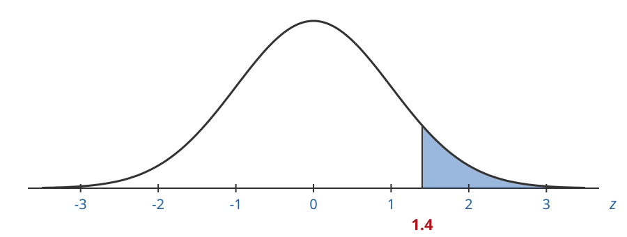
Find the left tail area first. Go to the row 1.4 and the column .00:
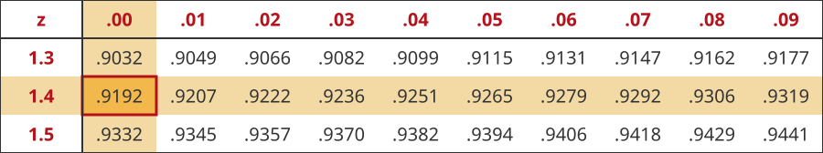
\text{left tail area} = 0.9192
\text{right tail area} = 1.0 - 0.9192 = 0.0808 \approx 8\%
There is about an 8\% chance of lost sales this week.